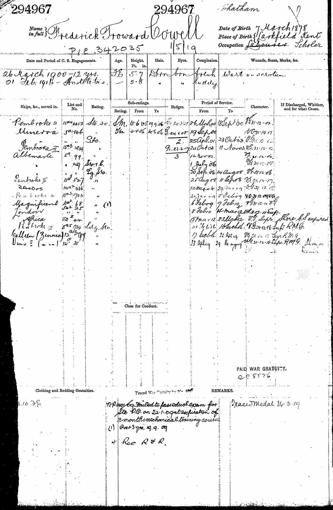

Frederick Troward Cowell 1878 - c1950
[ Home ] | [ Calendar ] | [ Surnames Index ] | [ Family History ]An agricultural laborer and the son of John Cowell (a laborer) and Caroline Twyman, Frederick Cowell, the first cousin three-times-removed on the mother's side of <a href="I1.html">Nigel Horne</a>, was born in East Malling, Kent, England on Mar 7, 1878<span class="citation">1,2,3,4,5,6,7,8,9,10</span> and baptized there at St James the Great Church, 2 The Grange on Apr 21, 1878.</p><p>Throughout his life, Frederick lived in several places: on Orchard Terrace, New Hythe Road in East Malling on Apr 3, 1881<span class="citation">1</span>; on Lunsford Lane in East Malling on Apr 5, 1891<span class="citation">12</span>; in Royal Navy on Mar 31, 1901<span class="citation">13</span>; in China and East Indies, Royal Navy, England on Apr 2, 1911<span class="citation">14</span>; and on London Road, Malling, Kent, England on Sep 29, 1939<span class="citation">5</span>. He served in the navy from Mar 26, 1900 to May 29, 1919 (<em>Royal Navy - service number 294967</em>).<p>He died <i>c.</i> Nov 1950 in Maidstone, Kent<span class="citation">8,11</span>.
Parents
- John was born in Jul 1843
- Caroline was born c. May 1839
Citations
- 1881 England Census Online publication - Provo, UT, USA: The Generations Network, Inc., 2004. 1881 British Isles Census Index provided by The Church of Jesus Christ of Latter-day Saints © Copyright 1999 Intellectual Reserve, Inc. All rights reserved. All use is subject to the (Relation to Head of House: Son)
- 1891 England Census Online publication - Provo, UT, USA: The Generations Network, Inc., 2005.Original data - Census Returns of England and Wales, 1891. Kew, Surrey, England: The National Archives of the UK (TNA): Public Record Office (PRO), 1891. Data imaged from The National
- 1901 England Census Online publication - Provo, UT, USA: The Generations Network, Inc., 2005.Original data - Census Returns of England and Wales, 1901. Kew, Surrey, England: The National Archives of the UK (TNA): Public Record Office (PRO), 1901. Data imaged from the National
- 1911 England Census Online publication - Provo, UT, USA: Ancestry.com Operations, Inc., 2011.Original data - Census Returns of England and Wales, 1911. Kew, Surrey, England: The National Archives of the UK (TNA), 1911. Data imaged from the National Archives, London, England.
- 1939 Register - Findmypast (was recorded at this address)
- British Royal Navy Seamen 1899-1924 - Findmypast
- England & Wales Christening Records, 1530-1906 Online publication - Provo, UT, USA: Ancestry.com Operations Inc, 2008.Original data - Genealogical Society of Utah. British Isles Vital Records Index, 2nd Edition. Salt Lake City, Utah: Intellectual Reserve, copyright 2002. Used by permission.Original dat
- England & Wales, Death Index: 1984-2005 Online publication - Provo, UT, USA: The Generations Network, Inc., 2007.Original data - General Register Office. England and Wales Civil Registration Indexes. London, England: General Register Office. © Crown copyright. Published by permission of the Cont
- England & Wales, FreeBMD Birth Index, 1837-1915 Online publication - Provo, UT, USA: The Generations Network, Inc., 2006.Original data - General Register Office. England and Wales Civil Registration Indexes. London, England: General Register Office. © Crown copyright. Published by permission of the Cont
- UK, Royal Navy Registers of Seamen's Services, 1900-1928 Ancestry.com Operations, Inc.
- England & Wales deaths 1837-2007 - Findmypast
- 1891 England, Wales & Scotland Census - Findmypast (was age 13 and the brother of the head of the household)
- 1901 England, Wales & Scotland Census - Findmypast (was age 23 and a member of crew in the household)
- 1911 Census for England & Wales - Findmypast (was age 33; Marital Status: Single)
Media
Frederick Troward Cowell - naval record

England & Wales deaths 1837-2007 Transcription - BMD-D-1950-4-AZ-000209-006
1891 England, Wales & Scotland Census - GBC/1891/0005472925
Kent Baptisms - GBPRS/B/82129090/1
England & Wales births 1837-2006 - BMD/B/1878/2/AZ/000129/327
1939 Register - TNA/R39/1831/1831D/008/31
British Royal Navy Seamen 1899-1924 - GBM/ADM188/44329
1911 Census For England & Wales - GBC-1911-RG14-34972-0791-17
1901 England, Wales & Scotland Census - GBC-1901-0033901839
Kent Baptisms - PRS/KENT/BAP/0377587
Family Tree

Generated by Ged2Site. Last updated on Jul 20, 2025